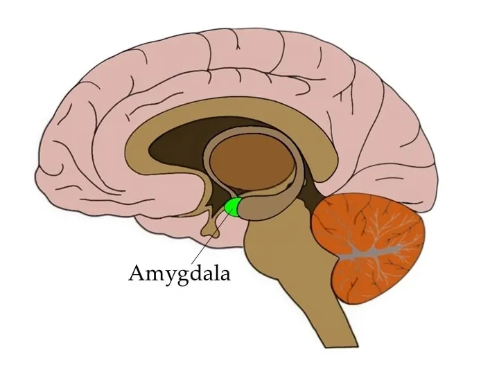

Définition et histoire
Le terme intelligence de la langue française est emprunté au latin intellĕgentĭa, lui-même dérivé du
latin intellĕgō («discerner, démêler, comprendre, remarquer»)
Émotion vient du mot latin motio qui signifie le mouvement

John Dewey 1909
la force d’observer et comprendre les situations sociaux ”Daniel Goleman 1995
a capacité des individus à reconnaître leurs sentiments et ceux des autres pour la motivation et la gestion des émotions pour eux-mêmes et leur relation avec les autres.a quoi sert l’intelligence émotionnelle et est ce qu’on peut l’acquérir ?
mécanique d’émotion


1- Chaude (réaction) : méfiant nous de nos réactions , ils ont le droit d’exister mais les suivre n’est pas intelligent
2- Mémoire vive : à nettoyer régulièrement car c’est une zone transitive vers la zone froide , sinon on rique le burn-out
3- Raison : zone froide , les marqueurs vécu ici , le problèmes devient des difficultés (Alzheimer passe de 1 a 3)
l’intelligence émotionnelle dans l’entreprise
- L’ hygiène énergétique
- L’émotion est un allie notre garde-corps
- Nos décisions sont structuré depuis qu’on était petit par nos émotions on n’oublie pas les choses « Lorsqu’on enfonce un clou dans une planche on peut enlever le clou mais il reste le trou»
- a mentalité de verre moitié plein
- Un ennemi c’est quelqu’un avec qui on a pas pris le temps de déjeuner
- consacrer, à sa mission ,à sa volonté , ne vouloir pas plus de ce que je peux
La où est il y a de la gène il n’ y a pas de plaisir
- NOUS c’est une personne à part entière
- Dire ce que je vais faire
- L’altruisme c’est réaliser son égoïsme à travers l’autre ,
- Ce qui intéresse les autres c’est satisfaire leur ego